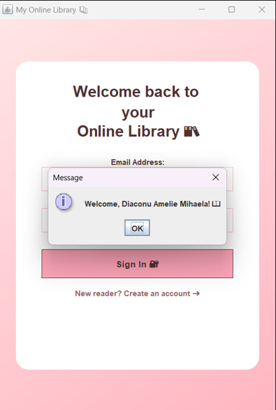
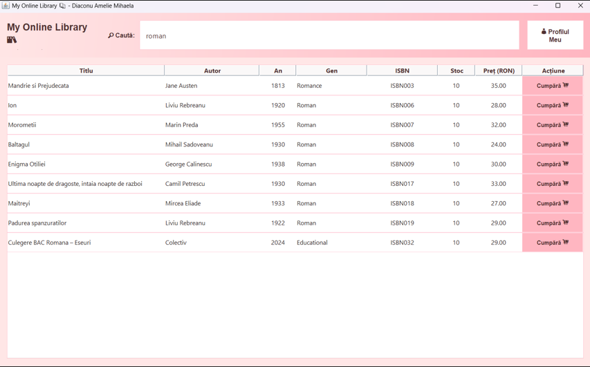
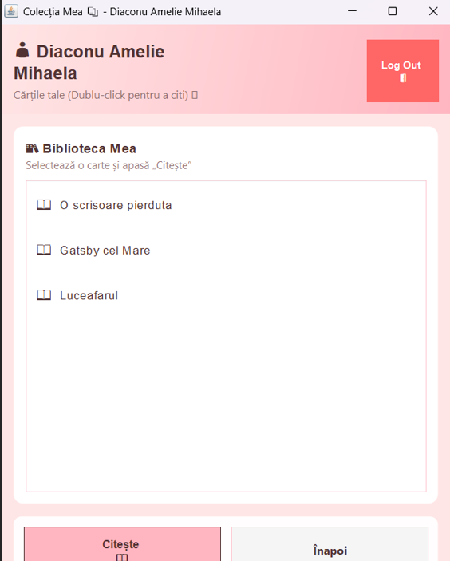
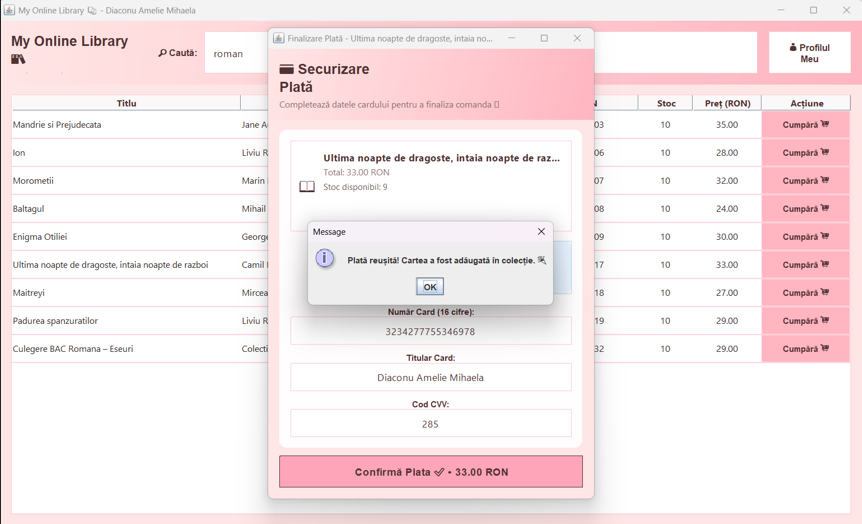
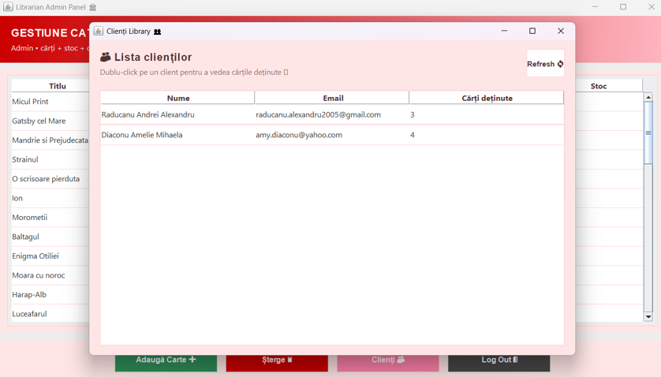
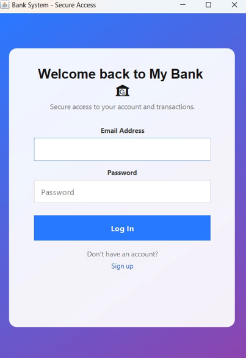
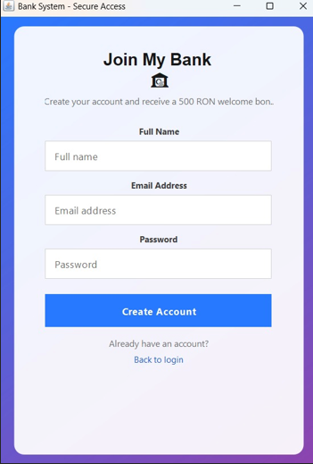
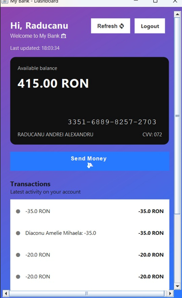
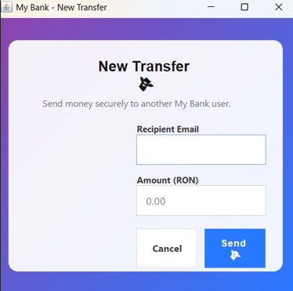
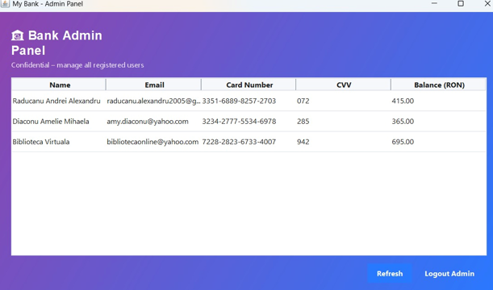

Descriere
Set de aplicații dezvoltate 100% în Java (Eclipse), cu interfață JavaFX, stocare în fișiere și comunicare client–server prin sockets pe porturile 5000 și 5001.
1) Aplicație Bibliotecă
- JavaFX UI + validare input
- Gestionare cărți / utilizatori (CRUD)
- Căutare / filtrare
- Persistență în fișiere locale
Imagini aplicație





2) Aplicație Bancară
- JavaFX UI + validări operațiuni
- Conturi, tranzacții, istoric
- Verificare sold / reguli de business
- Stocare în fișiere
Imagini aplicație





3) Server
- Server Java cu sockets pe porturile 5000 și 5001
- Mecanism de confirmare (ACK) pentru mesaje
- Gestionarea conexiunilor + tratare erori
Tehnologii
Java • JavaFX • OOP • File I/O • Sockets • Eclipse • Debugging & Testing